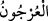
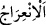

39. Ay için de birtakım menziller (yörüngeler) tâyin ettik. Nihayet o, eski bir
hurma salkımının sapı gibi (hilal) olur.
“Ay için de birtakım menziller (yörüngeler)” on iki burç üzere taksim edilmiş yirmi
sekiz menzil “tâyin ettik.” Ayın menzilleri hakkında Yunus suresinin başında (Yûnus,
10/5) yeterli bilgi verilmiştir.
Ay her gece bu menzillerden birine iner. Ne bu menzillerden öteye geçer; ne de
onlardan geri kalır. Nihayet son menziline gelince incelir ve kavislenir. Eğer ay otuz gün
ise iki gece kaybolur. Eğer ay yirmi dokuz gün ise bir gece kaybolur. Peygamberimiz
(s.a.) sekiz ya da dokuz ramazan oruç tutmuştur. Bunların beşi yirmi dokuz gün, gerisi
otuz gün olmuştur. Hz. Peygamber (s.a.) “İki bayramın ayları eksilmezler.”[139]
buyurmuştur. Yani fazîlet bakımından yirmi dokuz gün olduklarında onların hükmü, otuz
gün olduklarındaki hükümleri gibidir
Bu ümmetin devrinin, hesabı günler üzerine mebnî olan güneşe âid devir değil, hesâbı
ay üzerine binâ edilen kamerî-arabî devir olduğu sâbit olmuştur.
“Nihayet o,” ay “eski bir hurma salkımının sapı gibi (hilal) olur.”
Şeyhzâde der ki: Nihayet ay idrak edilen ayın sonunda ve gelecek ayın başında
incelik, kavislenme ve sararmada “eski bir hurma salkımının sapı gibi (hilal) olur.”
“
” kelimesi, eğrilmek demek olan “
” kökündendir. Hurmanın salkımından
hurma ağacından bittiği yere kadar olan hurma salkımının sapıdır.
Hurma salkımının sapı eskidiği zaman incelir, kavislenir ve sararır. Ayın sonunda ay
bu üç özellikte hurma salkımının sapına benzetilmiştir. Yani ay gerçekte bizatihi büyük
olduğu halde bakanın gözüne böyle ince, kavisli ve sarı görünür. Kadim, âdete göre
zamanı geçip eskiyen şeydir. Bir şeye kadim/eski demek için belli bir müddet yoktur.
Çünkü bazı şeylerin üzerinden daha henüz bir yıl dahi geçmediği halde ona kadîm/eski
denir. Kadîmin en az müddetinin bir yıl olduğu da söylenmiştir. Buna göre bir kimse:
‘Benim her kadîm kölem hür olsun’ diye yemin etse bir yıllık köleleri âzâd olur.
Keşfü’l-esrâr’da der ki: “Hikmet penceresinden şöyle denilmiştir: Ayın artması veya
eksilmesinin sebebi şudur: Yaratılışının başlangıcında nûru tam idi. Kendisine nazar
etti, kendini beğenip gururlandı. Yüce Allah Cebrail’e kanadını ayın yüzüne vurmasını
emretti. Ondaki nûru aldı. İbn Abbâs (r.a.) şöyle dedi: “Ayın üzerinde görülen çizgiler,
Cebrail’in kanadının işaretidir. Onun nûrunu aldı, ancak izi/nakşı yerinde kaldı. Ayın
alnına/yüzüne yazılı olan kelime-i tevhid, yâni “Lâilâhe illallah Muhammedun
Rasûlullah” idi. Ya da birleşmesinden Cemîl ismi meydana gelen harfler topluluğuydu.
Ay’dan nur alınınca, dergâha hizmetten men edildi. Ay, meleklerden yardım istedi. Ay
için şefaatçi oldular, dediler ki: “Ey Rabbimiz! Ay, yüce dergâha ibâdete alışmıştır; onu
birden bire uzaklaştırmak uygun olmaz. Âlemlerin Rabbi olan Allah onların şefaatini
kabul etti. Ona ayda bir defa, on dördüncü gece secde etmesine izin verildi. Şimdi her
akşam, ibâdet vakti yaklaştıkça, onun nuru artar. Nihayet on dördüncü gece, secde vakti
gelince nuru kemale erer. On dördüncü gece geçince, her gece nuru azalmaya başlar,